<link rel="import" href="../bower_components/polymer/polymer.html">
<link rel="import" href="../layouts/sidebar-layout.html">

<link rel="import" href="../bower_components/paper-button/paper-button.html">
<link rel="import" href="../bower_components/paper-dialog/paper-dialog.html">
<link rel="import" href="../bower_components/paper-dialog/paper-dialog-transition.html">


<polymer-element name="education-page">
    <template>
        <link rel="stylesheet" href="../css/style_timeline.css">

        <sidebar-layout selected="education">

            <div class="title">Education</div>

            <section id="cd-timeline" class="cd-container">
                <div class="cd-timeline-block">
                    <div class="cd-timeline-img cd-picture">
                        
                    </div>
                    <!-- cd-timeline-img -->

                    <div class="cd-timeline-content">
                        <h2>University of Applied Sciences Vorarlberg</h2>

                        <p class="cd-timeline-content-subtitle">Bachelor of Science in Engineering</p>

                        <p>Finished the study course Software Engineering and Information Design,
                            specialising in Java EE technologies. </p>
                        <paper-button on-tap="{{toggleFHVDialog}}" id="infoFHV" class="cd-read-more" hover raised>Read more</paper-button>
                        <span class="cd-date">2010 - 2013</span>
                    </div>
                    <!-- cd-timeline-content -->
                </div>
                <!-- cd-timeline-block -->

                <div class="cd-timeline-block">
                    <div class="cd-timeline-img cd-movie">
                        
                    </div>
                    <!-- cd-timeline-img -->

                    <div class="cd-timeline-content">
                        <h2>Polytechnic University of Catalonia</h2>

                        <p class="cd-timeline-content-subtitle">Erasmus exchange semester in Barcelona</p>

                        <p>Spent 6 months abroad. Deepened knowledge in graphics programming (<strong>OpenGL</strong>)
                            and
                            <strong>User
                                Interface design</strong>.
                            Developed a <strong>Android</strong> port of a well-known application in the educational
                            sector,
                            as a
                            students project.</p>
                        <paper-button on-tap="{{toggleUPCDialog}}" id="infoUPC" class="cd-read-more" raised>Read more</paper-button>
                        <span class="cd-date">2013</span>
                    </div>
                    <!-- cd-timeline-content -->
                </div>
                <!-- cd-timeline-block -->

                <div class="cd-timeline-block">
                    <div class="cd-timeline-img cd-picture">
                        
                    </div>
                    <!-- cd-timeline-img -->

                    <div class="cd-timeline-content">
                        <h2>Vienna University of Technology</h2>

                        <p class="cd-timeline-content-subtitle">Master of Science in Engineering</p>

                        <p>Enrolled in the masters degree Software Engineering & Internet Computing.
                            Currently working on my master thesis with a major swiss bank (Topic: "Modell-based testing
                            and
                            its
                            influence on agile environments")</p>
                        <paper-button on-tap="{{toggleTUDialog}}" id="infoTU" class="cd-read-more" raised>Read more</paper-button>
                        <span class="cd-date">approx. September 2015</span>
                    </div>
                    <!-- cd-timeline-content -->
                </div>
                <!-- cd-timeline-block -->

            </section>
            <!-- cd-timeline -->


            <paper-dialog heading="FH Vorarlberg" edu="fhv" transition="paper-dialog-transition-bottom">
                

                <p>The foundations of my informatics knowledge were laid here.</p>
                <ul>
                    <li>Computer Science Fundamentals</li>
                    <li>Operating Systems</li>
                    <li>Computer Networks</li>
                    <li>Algorithms and Data Structures</li>
                    <li>Object oriented programming</li>
                    <li>Team and Communication</li>
                    <li>Project management</li>
                    <li>etc.</li>
                </ul>
                <p>See the <a
                        href="http://www.fhv.at/fhv-studies/technology/software-information-engineering/course-details/course-structure-diagram-with-credits">curriculum</a>
                    of the study course I attended.</p>
                <paper-button affirmative autofocus>Got it!</paper-button>
            </paper-dialog>

            <paper-dialog heading="UPC Barcelona" edu="upc" transition="paper-dialog-transition-bottom">
                

                <p>The exchange semester was a fantastic experience.
                    I was able to expand my knowledge in the areas of</p>
                <ul>
                    <li>Interface Design</li>
                    <li>QTP and OpenGL programming</li>
                    <li>OpenGL shaders</li>
                    <li>Advanced project management</li>
                    <li>Android programming</li>
                    <li>eCommerce</li>
                </ul>

                <paper-button affirmative autofocus>Got it!</paper-button>
            </paper-dialog>
            <paper-dialog heading="TU Wien" edu="tu" transition="paper-dialog-transition-bottom">
                

                <p>At Vienna Tech we are constantly engaged in group projects. We develop web and business applications
                    using modern
                    technologies like</p>
                <ul>
                    <li>Java for Distributed Systems</li>
                    <li>Spring 4 Framework</li>
                    <li>Mobile programming</li>
                    <li>jQuery</li>
                    <li>Angular.js</li>
                    <li>Functional programming with Haskell</li>
                </ul>
                <paper-button affirmative autofocus>Got it!</paper-button>
            </paper-dialog>
        </sidebar-layout>
    </template>
    <script>
        Polymer('education-page',{
            toggleFHVDialog: function(event, detail, sender){
                this.shadowRoot.querySelector("paper-dialog[edu=fhv]").toggle();
            },
            toggleTUDialog: function(event, detail, sender){
                this.shadowRoot.querySelector("paper-dialog[edu=tu]").toggle();
            },
            toggleUPCDialog: function(event, detail, sender){
                this.shadowRoot.querySelector("paper-dialog[edu=upc]").toggle();
            }
        });
    </script>
</polymer-element>